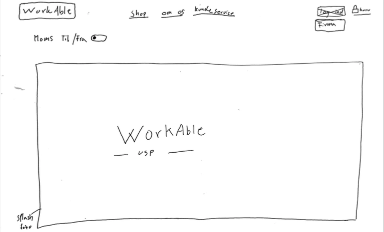

03. Grundlæggende UX
I tema 03_grundlæggende_UX, fik vi til opgave at lave en XD prototype
af en webshop. Her skulle der være fokus på brugeroplevelsen gennem
research og flere forskellige test. Jeg valgte at udarbejde en
webshop, der solgte slidstærke t-shirts til det beskidte arbejde. Jeg
startede min proces med at lave desk-research på, hvad der allerede
findes på markedet af arbejds t-shirts. Her fandt jeg blandt andet ud
af, at arbejds t-shirts har en markedspris på 200-250 kr/stk. Jeg
fandt desuden ud af at 9% af byggebranchens medarbejdere er kvinder,
hvorfor jeg valgte at lave t-shirtene unisex for at ramme begge køn
med samme produkt.
Jeg udarbejdede kvantitativ research i form af en Google survey, for
at få en dybere indblik i min målgruppe. Her fandt jeg ud af, at 81%
fik deres arbejdstøj igennem firmaet. Derfor valgte jeg, at målrette
mig virksomheden direkte mod firmaer, altså B2B med bl.a. firma login
og firma rabat på hjemmesiden. Samtidig ville jeg dog ikke helt
afskrive de knap 20 resterende procent, hvorfor der også er mulighed
for at handle for private.
Udover min kvantitative research, lavede jeg også et kvalitativ
interview med en smed. Her blev min research fra mit survey bekræftet,
da han også fik tildelt arbejdstøj gennem firmaet. Et af mine
spørgsmål til smeden var, hvad der ville få ham til at handle på
hjemmesiden. Han svarede, at det var vigtigt for ham at konventionerne
på hjemmesiden var brugervenlige, og at hjemmesiden så professionel
ud. f.eks. var det for ham et stort plus, hvis hjemmesiden kunne huske
betalingsoplysninger og at man kunne betale med Mobile pay. Af den
årsag valgte jeg at implementere Mobile pay samt Apple pay på siden.
Moodboard / Styletile
Imens jeg researchede, hvad der fandtes af arbejds t-shirts på markedet, researchede jeg også på, hvad de forskellige firmaer brugte af konventioner og farver. deraf udarbejdede jeg et moodboard og style tile som lagde grund for mine designvalg til min prototype.
Ideudvikling
I ideudviklingsfasen lavede vi en design sprint med lightning demo og crazy 8, hvor jeg genererede så mange forskellige ideer som muligt og udvalgte efterfølgende den bedste.
Skitse
I skitsefasen tog jeg den bedste idé fra design sprinten og tegnede det pænere og større op. Vi testede ideen i klassen, hvor vi gik rundt og så hinandens skitser og satte prikker de steder, vi syntes, der var gode ideer.
Design
I designfasen udviklede jeg prototypen ud fra skitsefasen, hvor jeg tog højde for, hvor der var sat prikker på skitsen og fik et indblik i, hvordan andre så skitsen og hvor den kunne optimeres.
Pitch
Er i også trætte af t-shirts med huller i? også mig! Derfor har jeg
skabt Workable! Workable er et firma, der sælger slidstærke t-shirts
skabt til det beskidte arbejde primært henvendt til firmaer, men med
mulighed for at private også kan handle.
Jeg har researchet markedet for en dedikeret arbejds t-shirt, og
fandt ud af, at de mærker som brander sig selv som arbejdstøj, i
virkeligheden blot laver t-shirts i almindelig kvalitet. Eneste
forskel er brandet.
Jeg valgte derfor at skabe en slidstærk t-shirt der “fitter” godt og
som er skabt til det hårde arbejde, fordi der mangler en dedikeret
arbejds t-shirt på markedet. Workable introducere ny teknologi på
markedet ved at producere arbejds-t shirts med aramid- fibre i
stoffet. Det giver en ekstrem holdbarhed, god åndbarhed og i
brandhæmmende egenskaber.
Workables tagline er: “En t-shirt der tilpasser sig din hverdag”.
Jeg benytter keywords som kvalitet, slidstyrke samt komfort som
tegner et billede af produktegenskaber og fordele for kunden. Jeg
tager brugeren i hånden og guider personen gennem hjemmesiden med
copy som “opret firma bruger og få fordele - det gratis og nemt”
samt micro-copy som “hvordan kunne du tænke dig at betale”.
Workables USP er “En slidstærk t-shirt skabt til hårdt arbejde &
outdoor mennesket”.
I min research til projektet fandt jeg bl.a. følgende insights fra
survey samt interview:
9% af beskæftigede i byggebranchen er kvinder,
81% af deltagerne svarede, at de gerne ville købe arbejdstøj online.
Jeg fandt også ud af, at min målgruppe var større end først antaget.
Jeg fik svar fra både låsesmede, dyrlæger/dyrepasser samt tandlæger og
have-glade pensionister, der alle godt kunne tænke sig en dedikeret
arbejds t-shirt. I min desk-research fandt jeg ud af, at aramidfibre
kan indbygges i bomuld og på den måde giver god slidstyrke. Gennem
test af sitet erfarede jeg, at der skulle flere billeder på
produktsiden, samt en FAQ-side for at imødekomme kundens eventuelle
spørgsmål. Fremtidsudsigter på sitet er, at udvide sitet med flere
forskellige slags arbejdstøj med aramid-fibre, samt løbende kører test
på sitet for at holde det opdateret og give brugeren den bedste
oplevelse. Jeg tror også, fremtiden ser lys ud for online køb af
arbejdstøj, da den ældre generation vil komme til at blive mere
online. Derudover vil alle de unge på arbejdsmarkedet forvente at
kunne købe deres arbejdstøj online. Tak for jeres tid!